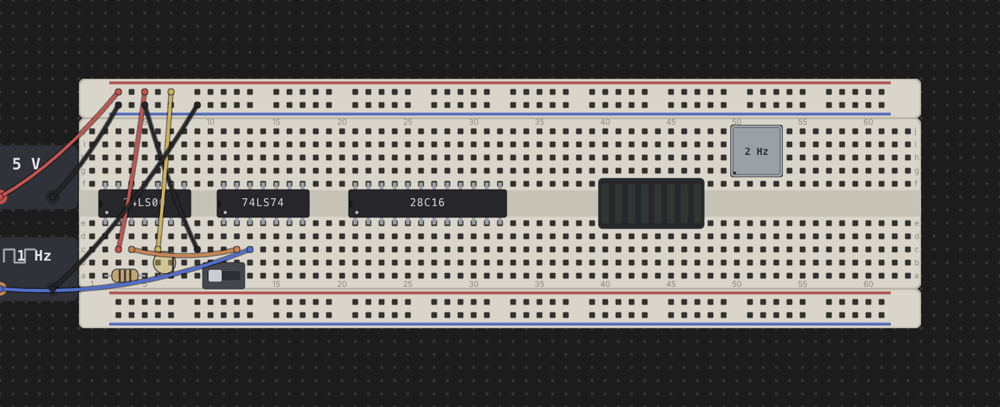

Chips & Components
Everything that isn't a breadboard strip lives in the Parts palette on the left: 74xx logic chips, memory chips, switches, LEDs, displays, resistors, oscillators, and power/clock bricks. This page covers finding a part, seating it on a board, and the (surprisingly varied) ways different parts rotate and flip once they're down.

The parts palette
The palette opens with every section collapsed, grouped by function:
- CHIPS — every 74xx logic family, folder-grouped, plus a separate Memory group for ROM/RAM chips.
- COMPONENTS — Switches, Resistors, LEDs, Displays, Oscillators, and Power, in that shelf order.
Type in the Filter parts… box to search by id, title, or description —
matching, it forces every group open so results aren't hidden behind a
collapsed folder. A chip whose behavior is wired into the simulator carries
a small sim badge next to its name (every chip in the catalog currently
does). Click any entry to arm placement — a ghost of the part follows your
pointer until you click it down on a board, or press Esc to cancel.
Placing a DIP chip
A DIP chip always straddles the trench: half its pins seat in row e, the other half in row f, running the standard counterclockwise DIP numbering — pin 1 at the anchor hole in row e, pins continuing left to right along e, then wrapping back right to left along f. The notch end of the chip (or the dot beside pin 1) marks pin 1 and always faces left. Move the ghost over a pin-board and it snaps to the nearest legal seat; it turns red if the seat is already occupied or falls off the edge of the board.
Because a chip's footprint always occupies rows e/f no matter how it's turned, placing one is a matter of picking the column — there's no click-to-rotate step while placing a chip the way there is for a rail or a resistor; instead, rotation happens afterward (see below).
Placing a discrete
Most discretes — slide switches, push buttons, toggle buttons, LEDs (in
their default horizontal form), single-digit 7/8-segment displays, and LED
bars (bar8) — are linear: they seat along a run of adjacent holes in any
single grid row (any of a–j), not just rows e/f. Drop one anywhere its
footprint fits and every free hole underneath it is available.
A few parts don't fit that linear model:
- bar8iso — the isolated 8-segment LED bar — is packaged as a 16-pin DIP, so it straddles the trench exactly like a chip: anodes A1–A8 in row e, cathodes K1–K8 in row f.
- Oscillator cans (osc-full, osc-half) are rigid four-cornered shapes rather than a line of pins — a full can is 7 holes by 4, a half can 4 holes square, with legs only at the four corners. A can can seat anywhere on the grid, including straddling the trench, since its shape (not a row) determines its footprint.
Rotating & flipping
Rotation behavior is not one rule for every part — it depends on what kind of part it is. This is the part worth reading carefully.
Chips (R, mid-drag or while selected). A DIP chip's footprint maps
onto itself when flipped — same two rows, same columns — so flipping only
reverses which physical pin sits where; the chip never has to move. Select a
placed chip and press R to flip it 180° in place, or press R while
mid-drag to flip it before you drop it. Either way its pin-assignments
window updates to show the new numbering.
bar8iso (R while selected). The isolated LED bar is DIP-packaged, so
it flips exactly like a chip: R turns it 180° in place, the same 16 holes,
only the anode/cathode assignment per bar reverses. It does not have the
turn-in-hand behavior of a plain LED — treat it as a chip for rotation
purposes.
Resistor and LED (R, both while placing and once placed). These
two-lead parts start in a horizontal footprint form (pin 1 and pin 2 a
fixed span apart along one row). Press R while the ghost is armed to turn
it into a vertical two-free-ends form instead: pin 1 stays at the anchor
hole, and pin 2 becomes a free lead that can land on any other free hole —
including a hole on a different strip entirely, such as reaching up to a
power rail. Each R press while placing steps the ghost a further quarter
turn, cycling through all four compass directions before repeating. Once the
part is placed, select it and press R to rotate it 90° at a time — pin 1
stays put and pin 2's lead swings around it, hunting for the next free hole
to land in.
Oscillator cans (R, but the exact step differs by state). A can spins
around its own centre, not around one pin, and the step size changes
depending on whether you're still placing it:
- While placing,
Rsteps the ghost a full 90° quarter-turn each press, so you can hunt through every orientation for one that fits. - Once seated and selected,
Rbehaves differently for the two sizes: the square osc-half can still steps 90° at a time, but the rectangular osc-full can jumps straight from 0° to 180° (and 90° to 270°) — because a non-square footprint only has two genuinely distinct orientations once it's down (rotating it a further 90° would just retrace the same two footprints it already swept through while placing).
LED polarity (F, while placing only). Independent of rotation, press
F while an LED's placement ghost is armed to flip which lead is the anode
and which is the cathode, before you click it down.
Occupancy — one hole, one lead
Every hole on a breadboard — and every terminal on a power/clock brick — holds at most one lead, whether that's a chip pin or a wire end. Placing a part checks every one of its derived pin positions against every other part and every wire already on the desk; if any pin would land on an occupied hole, or off the edge of a board entirely, the ghost turns red and the drop is refused. This is the same rule a wire's endpoints follow (see Wiring, Nets & Buses) — chips, discretes, and wires all compete for the same holes, with no separate bookkeeping for any of them.
A rotated resistor or LED's free lead is the one case where a pin can legally resolve to nothing — if you later move or delete the strip under that lead, the part stays exactly where it is and that leg simply floats, unconnected, just as it would on a real bench.
The pin-assignments window
Double-click any placed part — chip, discrete, or brick — to open its
floating pin-assignments window: a diagram of every pin/terminal and, for
most chips, a cropped datasheet excerpt below it. A real chip's diagram
stays fixed at its canonical layout no matter how you've flipped it on the
desk (it matches the physical part, not the placement); bar8iso is the
exception — its diagram reflects its current R flip, since it has no real
notch of its own. See The 74xx Chip Library for the full
detail on what the window shows and how it sources its datasheet crops.
See also: The Desk & Breadboards for how boards and strips work, and Wiring, Nets & Buses for connecting components together once they're placed.